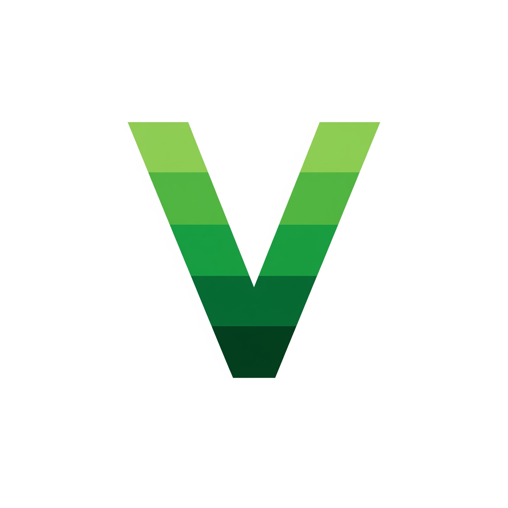

About Me
I’m Virgi Symone Jordaan, a detail-oriented professional with a strong foundation in auditing, IT support, and digital operations. My career journey spans roles at PwC, SEO-focused startups, and IT support training with CAPACITI – UVU Africa NPC.
I thrive at the intersection of compliance, technology, and user support, bringing together structured problem-solving from my audit background with hands-on IT and digital experience.
My portfolio reflects expertise in audit and compliance processes, IT troubleshooting, data analysis, and digital transformation, supported by certifications in IT support, data tools, and business operations. I believe in delivering reliable solutions with accuracy, confidentiality, and human-centered thinking.
Career Objective
I aim to merge my audit expertise with growing IT support skills to build a career in IT audit, compliance, and technical operations. Whether it’s reconciling data, strengthening system controls, or supporting end-users, I focus on creating value through precision, adaptability, and continuous learning.
Technical Skills & Competencies
IT & Audit Skills
- IT Support & Troubleshooting
- Financial Auditing & Reconciliations
- Utility Billing & Reconciliation
- Tariff Allocation & Adjustments
- Financial Statement Analysis
- Process Documentation & Compliance
Tools & Platforms
- Microsoft Office Suite (Word, Excel, PowerPoint)
- Google Workspace (Docs, Sheets, Slides, Forms, Calendar, Drive, Gmail)
- Power BI, Excel (Advanced), Data Visualization
- WordPress & Google Analytics
- Pastel Accounting
- Communication Tools: Zoom, Microsoft Teams, Google Meet
- Canva
Soft Skills
- Analytical Problem-Solving
- Clear Communication & Active Listening
- Confidentiality & Discretion
- Adaptability & Flexibility
- Collaboration & Teamwork
- Time Management & Prioritisation
Resume
You can download my latest resume below:
📄 Download Resume